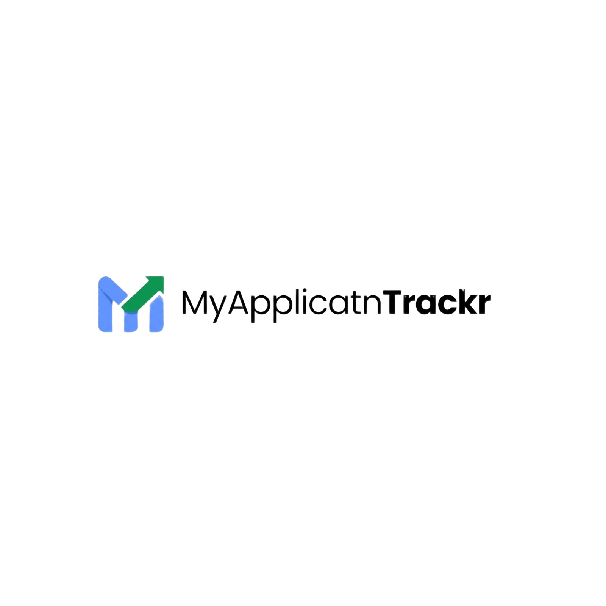
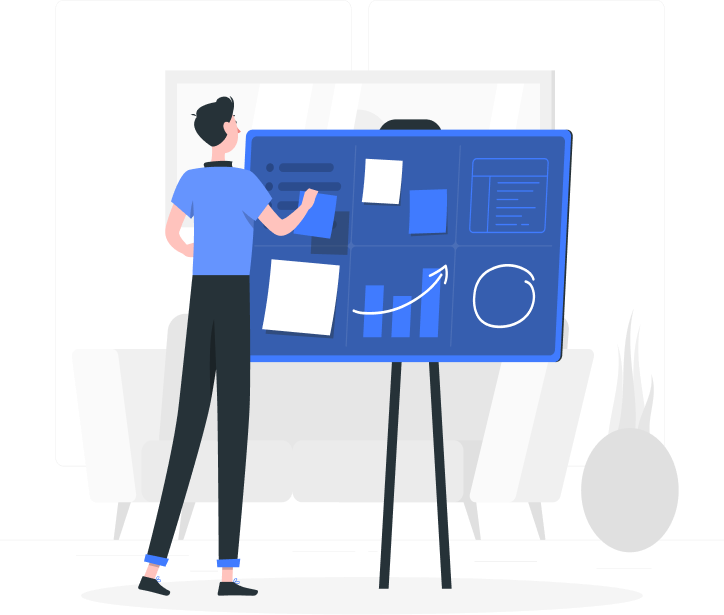

Keep all your job applications in one place. Easily store important details like company name, job role, application date, and notes so nothing gets lost during your job search.
Monitor the status of every application from Applied to Interview, Offer, or Rejected, giving you a clear view of your progress at every stage.
Our intuitive dashboard makes it easy to add applications, update statuses, and manage your job search efficiently without unnecessary complexity.
Set reminders to follow up with recruiters at the right time. Staying proactive increases your chances of moving forward in the hiring process.
Job and Internships feature would be recommended to our users to gain exclusive access to a vetted netwwork of industry leaders and hiring partners
A feature that transforms your raw application data into a visual roadmap of your journey by tracking your win rates, you gain the clarity needed to refine your strategy.

John E11
This tracker actually makes me want to apply for more roles because seeing my progress is so addicting. 10/10 recommend."

David Smith
I used to have 40 tabs open and zero idea where I stood. Now I just check my dashboard, see my progress and I’m back in the zone.

Sarah Johnson
I went from 'I think I applied to that' to 'I know exactly where I stand.' Seeing my win rates in a clean dashboard was it for me

Haniel Daniel
Tracking job applications used to be stressful. This platform made it easy to stay organized.

Daniel Efe
I missed three deadlines last semester, Since switching, I haven't missed a beat. I highly reccommend.

Josephine Joe
The follow-up reminders are extremely helpful. They keep me proactive during my job search.

John Glory
I could see exactly how many apps it took to get one interview, and that clarity kept me grinding.

Phile Isaac
I used to dread checking my applications. Now, seeing my progress visualized in a clean dashboard is the highlight of my morning.
Fill up a quick form about what you are applying for.
Update the status of your application as you progress through the application process.
Follow-up on deadlines of interviews and dates.